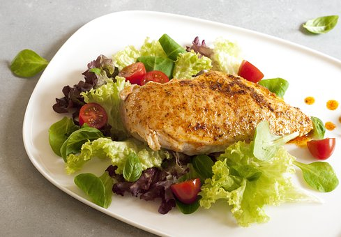
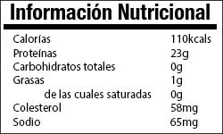

El pollo es una fuente de este tipo de carnes blancas, como las aves de corral, junto por ejemplo, al pollo o conejo. Se trata de una carne muy baja en grasas, de modo que podemos disponer de una fuente de proteínas magra.
La diferencia frente a la carne roja, es tal como su nombre indica, en la mención al color: la carne roja posee mayor contenido de mioglobina, que son las células que transportan el oxígeno a los tejidos a través del flujo sanguíneo.
Otro punto a destacar es el bajo contenido en colesterol de estas carnes frente a las rojas, y además de ser más bajas en calorías, por este motivo son muy recurridas en las dietas del control del peso.
La carne de pollo es muy fácil y rápida de preparar: si la cocinamos en filetes a la plancha, con un poco de aceite de oliva, algunas especias, vuelta y vuelta, y en 5min la tendremos lista!
Vamos a utilizar para expresar los valores nutricionales y así como el perfil de aminoácidos la pechuga de pollo, por ser, en términos generales, la parte mayor consumida dentro del ámbito de la dieta fitness.
